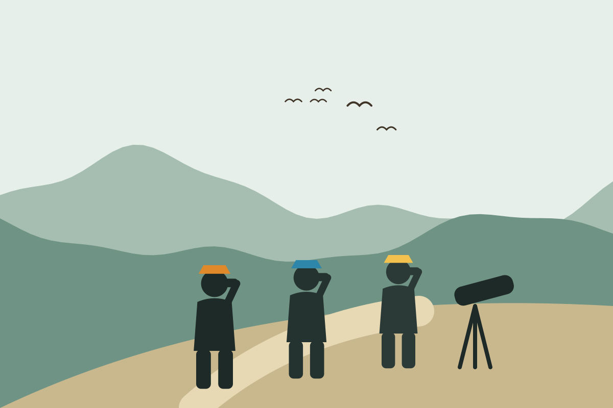

Laura Ríos
Aves de humedalBióloga. Lidera las salidas a los humedales y conoce los juncales donde se esconde la tingua bogotana.
Ruta Tángara organiza salidas de avistamiento de aves para personas que viven en Bogotá o la visitan. Trabajamos con grupos pequeños porque así el guía puede enseñar a cada participante a usar los binoculares y a reconocer lo que ve.
El nombre viene de las tángaras, aves de la familia Thraupidae conocidas por sus colores intensos. Las elegimos como símbolo porque suelen ser las que despiertan la curiosidad de quienes salen a pajarear por primera vez.

Bióloga. Lidera las salidas a los humedales y conoce los juncales donde se esconde la tingua bogotana.
Identifica las aves por su canto. Guía las rutas de páramo y la ruta de aves endémicas.
Fotógrafa de naturaleza. Enseña a observar colibríes y a fotografiarlos con el celular.
| Guía | Especialidad | Años guiando | Idiomas | Salidas que lidera |
|---|---|---|---|---|
| Laura Ríos | Aves de humedal | 9 | Español e inglés | Humedal al amanecer · Aves acuáticas de La Florida |
| Andrés Bermúdez | Cantos y sonidos | 12 | Español | Páramo y frailejones · Ruta de aves endémicas |
| Camila Peña | Colibríes y fotografía | 6 | Español e inglés | Jardín de colibríes · Bosque de niebla |
Máximo 12 personas por salida y 8 en el nivel avanzado, para que todos vean y escuchen.
No usamos playback con especies amenazadas ni nos acercamos a los nidos.
Llevamos botiquín y un protocolo de emergencia, y revisamos el clima antes de cada salida.
Andrés recomienda empezar por las aves más comunes de Bogotá: cuando sus cantos ya son familiares, es más fácil notar uno nuevo.
Canto largo y variado; suele cantar al amanecer y al atardecer.
Grabación: Diego Gaona, XC410080. Licencia: CC BY-NC-SA 4.0.
Nota metálica y repetida; se escucha antes de ver al ave.
Grabación: David Ricardo Rodríguez Villamil, XC338150. Licencia: CC BY-NC-SA 4.0.
Revisa el calendario y elige la que más te guste.